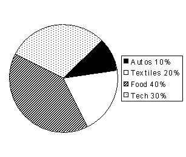

Ques Refer the graph below to answer the question.
DISTRIBUTION OF IMPORTS AND EXPORTS FOR COUNTRY X IN 1994.
Imports: 200 million items
Exports: 100 million items

In 1994, if twice as many autos imported to
Country X broke down as autos exported from Country X and 20 percent of the
exported autos broke down, what percent of the imported autos broke down?
Solution: If
20% of the exports broke down, then 2 million autos broke down (20%x10). Since "twice
as many autos imported to Country X broke down as autos exported from Country
X," 4 million imported autos broke down. Further,
Country X imported 100 million autos (50%x200). Forming the percentage yields
= 0.04 = 4%
The answer is
(D).